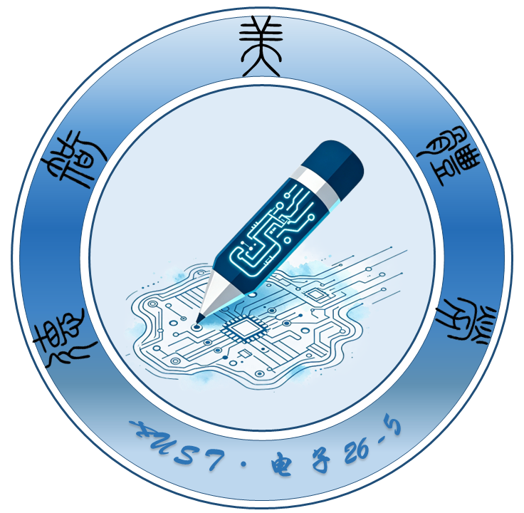
班徽全貌
- 外环：蓝色渐变同心圆环，内细外粗，层次分明
- 环上五字：篆书「德 · 智 · 体 · 美 · 劳」随环旋转排列，黑白线稿与蓝环形成对比
- 中央：电路钢笔立于电路板之上，笔身电路纹发光，笔尖点在芯片上
- 底部弧形文字：AUST · 电子 26-5，华文行楷，点明学校、专业与班级
01 / DESIGN
设计理念
一支笔 · 一颗芯 · 五育并举
文化为魂
环上五枚篆书字——德、智、体、美、劳，取自中华千年金石之学，把“五育并举”的育人理念写进班徽，让徽章自带书卷气与历史厚度。
专业为形
中央一支“电路钢笔”：笔身流转着发光电路纹，笔尖正落在电路板上一枚芯片上——用电子信息工程自己的语言，书写专业的现在与未来。
凝聚为环
蓝色渐变同心圆环把五育环抱一周，五字环列、首尾相续，象征全班同学团结一心、循环向上；弧形文字 AUST · 电子 26-5 点明归属。
02 / 五育篆书
环上五字，环环相扣
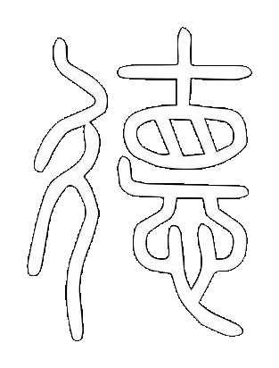
品德修养是立身之本
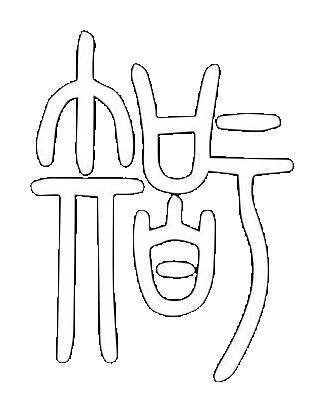
求知创新是专业之基
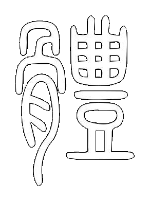
身心健康是奋斗之本
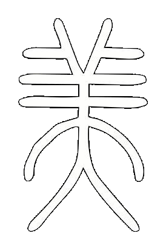
审美情趣是生活之光
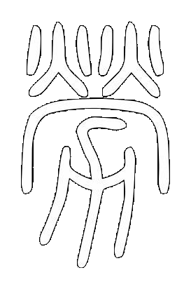
劳动实践是成事之道
设计巧思：五字取篆书古体，随圆环旋转排列、首尾相续——既是“五育并举”，也暗合全班同学手拉手围成一圈的意象。
03 / 五育日常
徽章上的五个字，
都是我们一起走过的日常
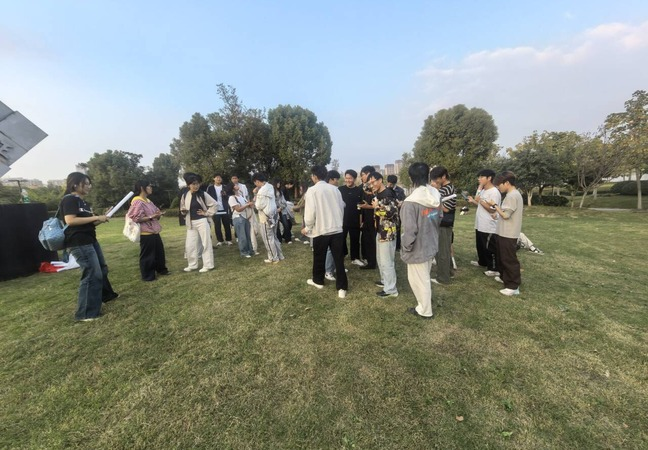
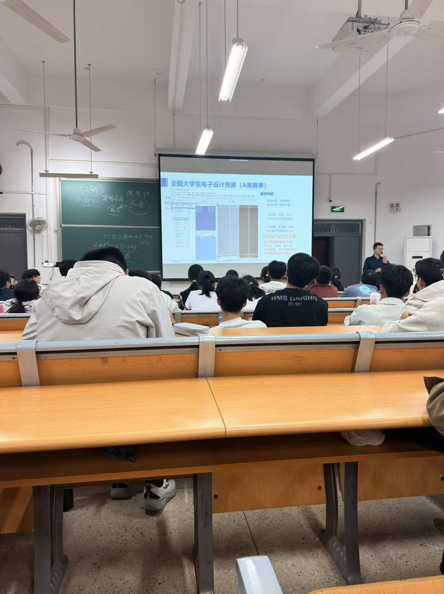
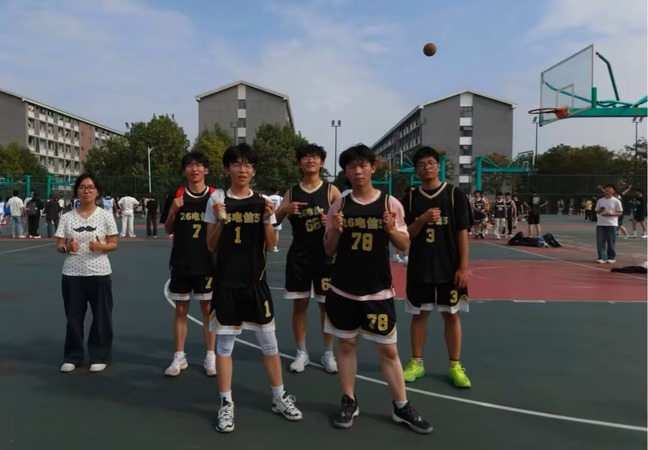
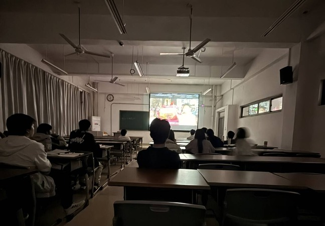
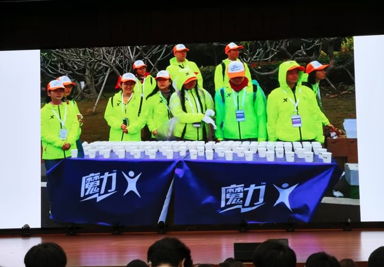
「德智体美劳」不只刻在徽章上，更写在我们的每一天里。
04 / 电路钢笔
笔尖生芯
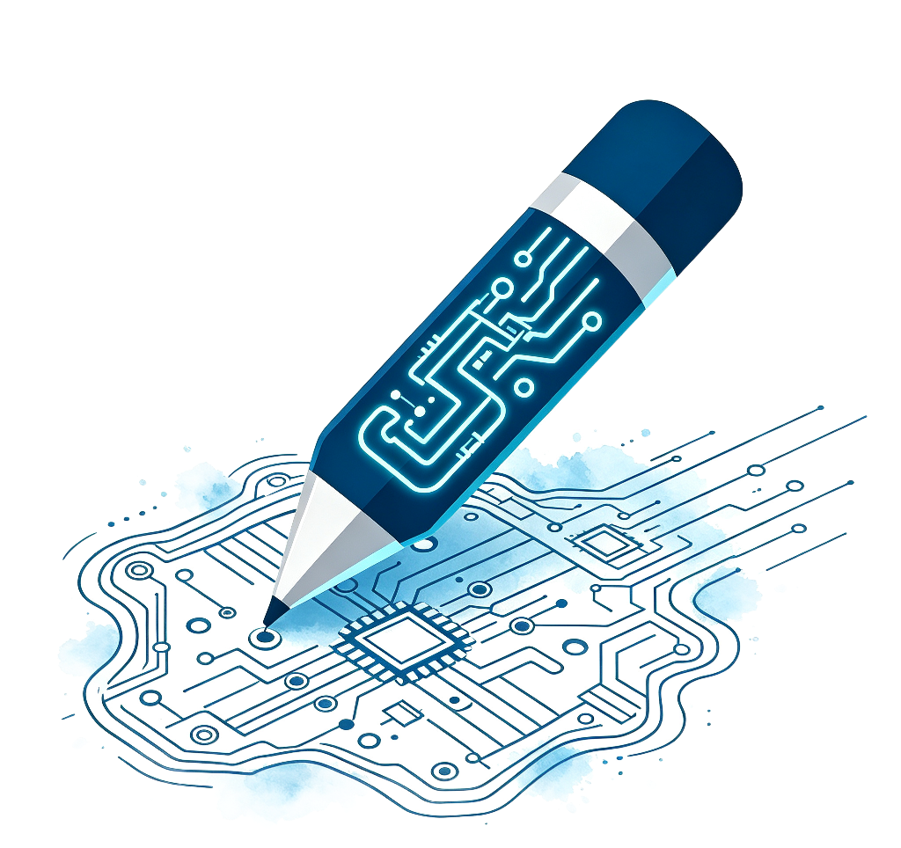
- 钢笔：学习与书写的象征——我们以笔为器，记录四年的成长轨迹。
- 笔身电路纹：发光的电路走线替代普通笔杆纹饰，电子信息工程的专业身份一目了然。
- 电路板与芯片：笔尖落在一枚芯片上——每一笔都“写”进集成电路，寓意用专业知识书写未来。
- 整体寓意：「笔尖生芯」——以学习为笔、以芯片为纸，在信息时代写下属于五班的篇章。
细节巧思：发光的电路走线代替普通笔杆纹饰，线路交织汇聚成数字 5，同时代表电子信息工程 26-5 班——走心相连，五班同心；丝丝线路紧紧相连，象征五班同学凝心聚力，并肩共进。
05 / 圆环与文字
规矩成环，蓝色传承
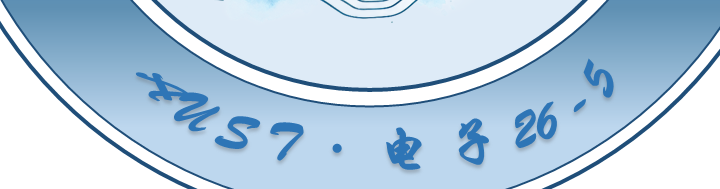
- 同心圆环：外粗内细双环围合——象征规矩与秩序，也象征五班同学团结一心、凝聚成环。
- 蓝色渐变：由浅入深的过渡色如同信号波形层层推进，呼应校徽的蓝色制式，传承安理基因。
- 弧形文字：AUST · 电子 26-5 沿内环下弧展开，学校、专业、届别、班号一次说清，行楷字体添一分书卷气。
06 / FEATURES
特点与创新点
篆书入徽
把三千年的篆书搬上班徽，用最古老的文字承载最新的育人理念——文化底蕴即辨识度。
古今碰撞
金石篆刻 × 电路钢笔，传统与科技在同一枚圆环里对话，反差感就是记忆点。
五育成环
五枚字章随环旋转排列、首尾相续——构图本身就是寓意：五育并举、生生不息。
一色贯穿
全徽只用蓝白墨三色，没有多余装饰——简洁大方，缩小到微信头像依然清晰可辨。
德智体美劳，环环相扣；← 返回班级文化
一支电路钢笔，写下五班的名字。
我们承校训「团结、奋进、博学、奉献」，
也将在电子信息的大海上，发出自己的信号。 安徽理工大学 · 电子信息工程 26-5 班